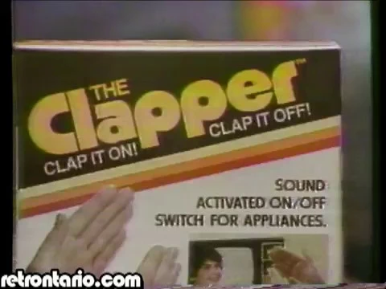
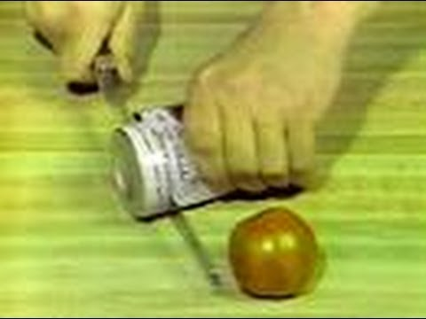
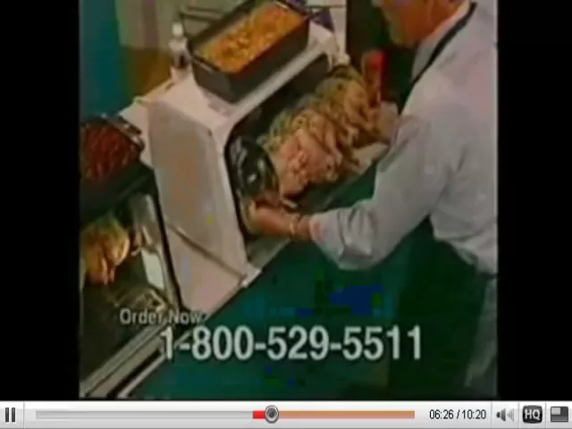
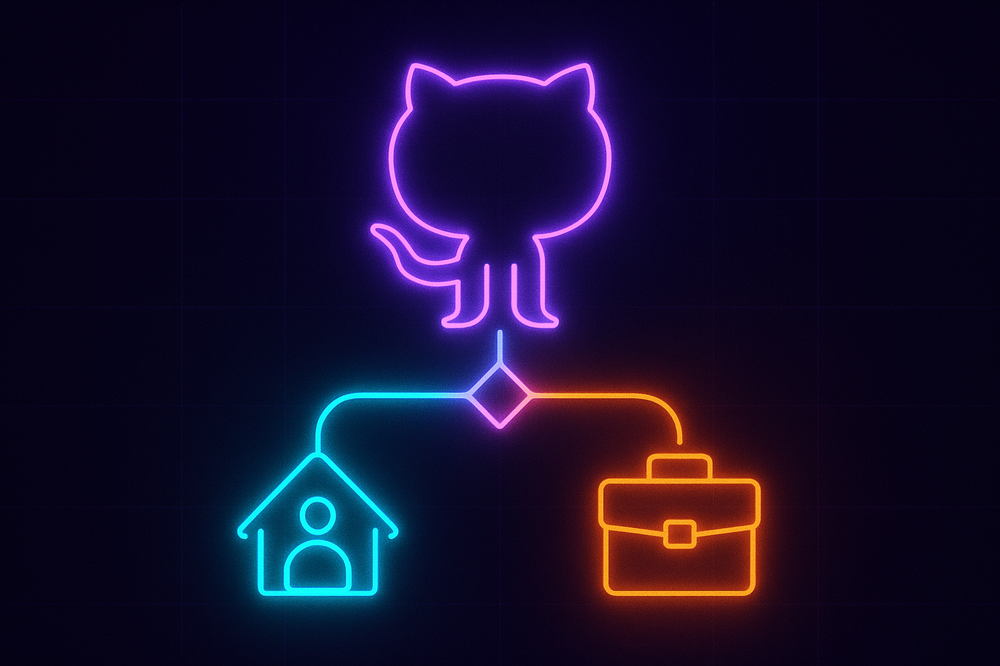
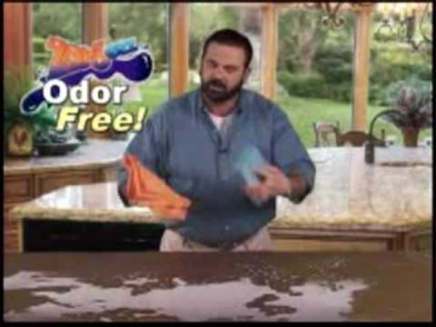
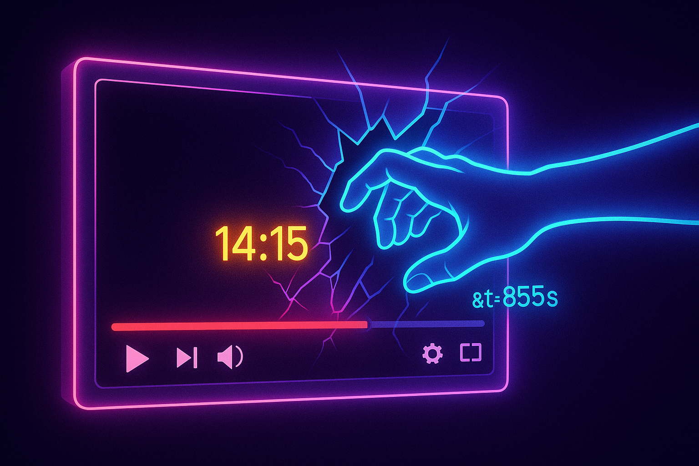
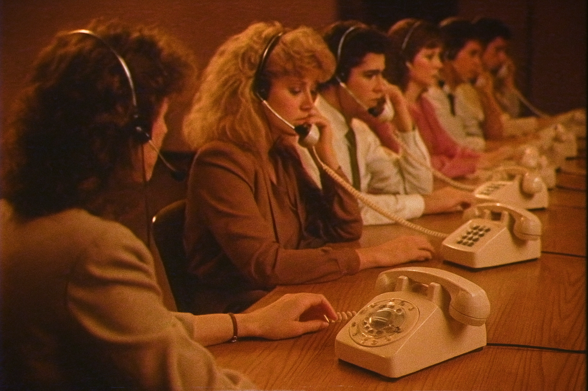
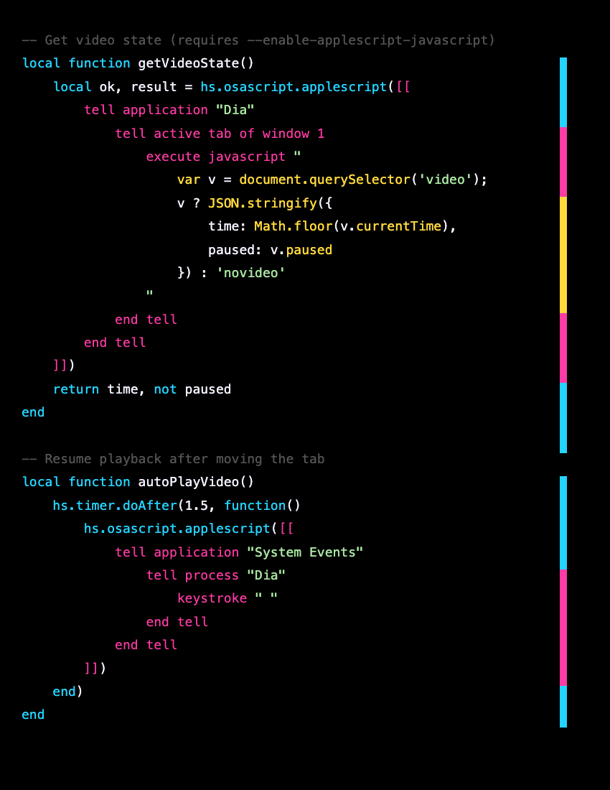
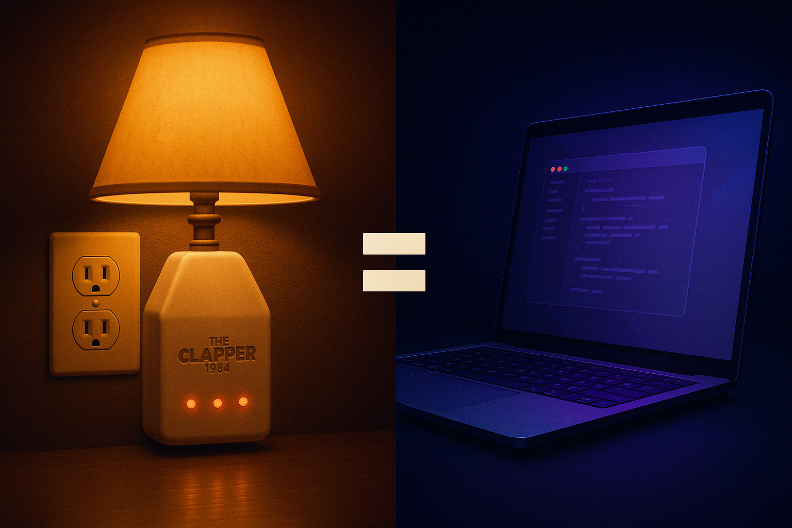

A Hacker Dojo Talk
Clap On, Clap Off.
Making your Mac do what you actually want.

The Clapper shipped in 1984. It was a $19.99 device that let you turn your lamp on and off by clapping. It was dumb. It was beautiful. It gave ordinary people a superpower they didn't know they wanted: control over their environment without getting up from the couch.
Your Mac has a Clapper. You just don't know about it yet.
Roll the tape →Every day, you do things on your Mac that annoy you. Little things. You open a link and it goes to the wrong browser window. You copy a URL, close a tab, switch windows, open a new tab, paste, hit enter — six steps for what should be zero.
You don't fix these things because you assume they're unfixable. That's just how computers work.
It's not. Your Mac has a hidden automation layer that's been sitting there for a decade, waiting for someone to tell it what to do. And now — with ChatGPT, Claude, and every other AI that can write code — you can be that someone. You don't need to be a programmer. You need to be annoyed enough to describe what you want.
This talk is about that moment of realization. The moment you stop adapting to your computer and start making your computer adapt to you.
The infomercial
- 01The Annoying ThingThe real problem nobody sells a solution for.
- 02The ToolHammerspoon — what it is, what it does, three lines to get started.
- 03The ClapperOne keystroke to move a tab between browser profiles.
- 04The AutopilotAuto-routing tabs by domain, with path-based rules for GitHub.
- 05Don't Be AnnoyingCooldowns, overrides, and an undo button. The user always wins.
- 06Be Kind, RewindPreserving YouTube playback position and play state across profiles.
- 07The Full PictureHow it all connects — and what else you can automate.
- 08The Three LanguagesLua, AppleScript, and JavaScript — what each does and why they need each other.
Chapter one
The Annoying Thing
"I've fallen and I can't get up!"
Let me show you my annoying thing.
I use a browser called Dia with two profiles — Personal and Work. Two separate windows, two separate sets of logins. My personal Gmail in one, my work Gmail in the other. My personal YouTube algorithm in one, my work Slack in the other. Clean separation.
Except links don't know where they belong.
I click a YouTube link in Slack and it opens in my Work profile. Now YouTube thinks I want to watch insurance industry webinars. I open a GitHub link in my Personal profile and I can't see the private repos because I'm logged into the wrong account.
So I do the shuffle. Every day. Multiple times a day:
- Copy the URL
- Close the tab
- Click the other window
- Open a new tab
- Paste
- Hit enter
Six steps. Every time. For the rest of my life.
Or... not.

Chapter two
The Tool
"It slices! It dices!"
The tool is called Hammerspoon. It's free. It's been around since 2014. It sits in your menu bar and runs little scripts that can talk to your entire Mac — every window, every app, every keystroke.
You install it in one line:
brew install hammerspoonYou configure it by editing one file: ~/.hammerspoon/init.lua
And then your Mac starts doing what you tell it to.
Here's the thing: you don't even need to know the scripting language. You can describe what you want to ChatGPT or Claude and get working code back. The scripts are short — usually 10 to 30 lines. The language (Lua) is simple enough that you can read it even if you've never seen it before.
The real barrier was never technical. It was knowing that this was possible.
What's Under the Hood
Hammerspoon exposes the macOS accessibility and scripting APIs through Lua. Think of it as a long-running process with bindings to everything:
| Python | Hammerspoon | |
|---|---|---|
| Mac integration | subprocess.run(["osascript", ...]) | Native — hs.application, hs.window |
| Runs as | A script you launch | Always-on daemon in the menu bar |
| Global hotkeys | Can't intercept them | First-class citizen |
| React to app events | You'd poll | Event-driven — watchers for launch, focus, title changes |
Your first script:
hs.hotkey.bind({"ctrl"}, "h", function()
hs.alert.show("Hello from Hammerspoon!")
end)Lua — Your first Hammerspoon script: a global hotkey
Three lines. A global hotkey that works in every app. Try doing that in Python.
Chapter three
The Clapper
"Clap on! clap clap Clap off! clap clap"
Here's what I built: press Ctrl+S in the browser, and the current tab teleports to the other profile.
That's it. One keystroke replaces six manual steps. The tab closes in Work, opens in Personal — same URL, same everything. A little notification pops up confirming where it went.
Behind the scenes, the script asks the browser three questions: What profile am I in? (reads the window title). What's the URL? (asks the browser directly through its API). Where should I put it? (finds the other profile's window). Then it closes the tab, opens it in the other window, and focuses that window. Under a second.
How Ctrl+S Actually Works
The key insight: Chromium browsers silently ignore synthetic keystrokes from automation tools. Simulating Cmd+C, Cmd+W, Cmd+V doesn't work. What does work: AppleScript — a decades-old Mac scripting language that apps actually listen to.
-- Get the URL — no clipboard, no keystrokes, just ask
local ok, url = hs.osascript.applescript(
'tell application "Dia" to return URL of active tab of window 1'
)
-- Close the tab
hs.osascript.applescript(
'tell application "Dia" to close active tab of window 1'
)
-- Open in the other profile's window
hs.osascript.applescript(string.format(
'tell application "Dia" to make new tab in window 2 '
.. 'with properties {URL:"%s"}', url
))■ Lua · ■ AppleScript
Three API calls. No timing hacks. No simulated keystrokes. The browser cooperates because you're speaking its language.
The full handler detects which profile you're in, moves the tab, focuses the target window, and fires a native notification:
hs.hotkey.bind({"ctrl"}, "s", nil, function()
local app = hs.application.frontmostApplication()
if not app or app:bundleID() ~= "company.thebrowser.dia" then
return -- not Dia, do nothing
end
-- Personal has no prefix; Smirk windows say "Smirk: Page Title"
local win = hs.window.focusedWindow()
local isSmirk = win:title():find("Smirk:") ~= nil
local targetLabel = isSmirk and "Personal" or "Smirk"
local ok, url = hs.osascript.applescript(
'tell application "Dia" to return URL of active tab of window 1'
)
hs.osascript.applescript(
'tell application "Dia" to close active tab of window 1'
)
hs.osascript.applescript(string.format(
'tell application "Dia" to make new tab in window 2 '
.. 'with properties {URL:"%s"}', url
))
-- Find and focus the target window
for _, w in ipairs(app:allWindows()) do
local wIsSmirk = w:title():find("Smirk:") ~= nil
if (targetLabel == "Smirk" and wIsSmirk)
or (targetLabel == "Personal" and not wIsSmirk) then
w:focus(); break
end
end
local icon = isSmirk and "🏠" or "💼"
hs.notify.new(nil, {
title = icon .. " Moved to " .. targetLabel,
informativeText = url,
withdrawAfter = 2,
}):send()
end)■ Lua · ■ AppleScript · ■ strings

Chapter four
The Autopilot
"Set it and forget it!"
Ctrl+S is great, but I still have to remember to press it. What if the Mac just... knew?
YouTube → Personal. Slack → Work. Amazon → Personal. GitHub → depends on the repo.
I set up a list of rules — plain text files, one website per line:
youtube.com
reddit.com
x.com
instagram.com
# News
techmeme.com
wsj.com
# Shopping
amazon.com
# GitHub — personal repos
path:github.com/malpern
smirkhealth.com
# Tools
slack.com
figma.com
linear.app
zoom.us
# Analytics
posthog.com
# GitHub — work org
path:github.com/Smirk-Health
Notice the path: prefix on the GitHub lines. Plain domains match the domain and all subdomains. path: matches the URL path — so github.com/Smirk-Health/monorepo routes to Work, but github.com/malpern/dotfiles routes to Personal. Same website, different destinations based on who owns the repo.

Now when I open YouTube in my Work profile, the Mac watches, sees the page load, checks the rules, and quietly moves it to Personal. No button press needed. And the rules reload live — save the file, the Mac picks it up instantly.
How the Auto-Router Works
Hammerspoon watches for window title changes (which signal a new page load), grabs the URL via AppleScript, and matches against the rule files:
local filter = hs.window.filter.new(false):setAppFilter("Dia")
filter:subscribe(hs.window.filter.windowTitleChanged, function(win)
hs.timer.doAfter(0.5, function()
local ok, url = hs.osascript.applescript(
'tell application "Dia" to return URL of active tab of window 1'
)
local target = profileForURL(url) -- "Smirk", "Personal", or nil
if not target then return end -- no rule, leave it alone
local current = win:title():find("Smirk:") and "Smirk" or "Personal"
if current == target then return end
moveCurrentTabToProfile(url, target)
end)
end)Lua — Watching for page loads and auto-routing by domain
Files reload via hs.pathwatcher — no restart needed:
hs.pathwatcher.new(ROUTES_DIR, function()
smirkRules = loadRules("smirk.txt")
personalRules = loadRules("personal.txt")
end):start()Lua — Live-reload route files when saved

Chapter five
Don't Be Annoying About It
"But wait, there's more!"
Autopilot is great until it fights you.
I intentionally open YouTube in my Work profile to watch a demo video from a coworker. The Mac sees YouTube, grabs it, throws it to Personal. I move it back. The Mac throws it again. We're in an argument. With my own computer.
The solution: a 10-minute cooldown. When I manually move a tab with Ctrl+S, the Mac backs off that URL for 10 minutes. "You clearly want this here. I'll leave it alone."
And the notification has an Undo button — if I accidentally moved it and want the autopilot to take it back, I tap the button and the cooldown cancels.
The design principle: opinionated but not stubborn. The system has opinions about where your tabs belong. But you always win.
The Cooldown System
local COOLDOWN_SECONDS = 600
local recentlyRouted = {}
local function isOnCooldown(url)
local t = recentlyRouted[url]
if not t then return false end
if os.time() - t > COOLDOWN_SECONDS then
recentlyRouted[url] = nil
return false
end
return true
endLua — 10-minute cooldown prevents the auto-router from fighting manual moves
Notifications with action buttons use hs.notify:
hs.notify.new(function(notification)
if notification:activationType()
== hs.notify.activationTypes.actionButtonClicked then
clearCooldown(url)
end
end, {
title = "💼 Moved to Smirk",
informativeText = url,
actionButtonTitle = "Undo Cooldown",
hasActionButton = true,
withdrawAfter = 5,
}):send()Lua — Notification with an actionable "Undo Cooldown" button
Chapter six
Be Kind, Rewind
"I've fallen and I can't get up... but I remember where I fell."
The final piece. You're 14 minutes into a YouTube video. You Ctrl+S it to the other profile. The page reloads from scratch. You've lost your place.
Not anymore.
Before moving the tab, the script reaches inside the web page and asks the video player: "Where are you? Are you playing?" It captures the timestamp, adds it to the URL, and opens the video at exactly the right spot. If the video was playing, it presses spacebar after the page loads to resume playback.

You're watching a video. You press Ctrl+S. The video disappears from one window, reappears in the other, at the same moment, still playing.
It's dumb. It's beautiful. It's The Clapper.
Three Layers Deep
This is where it gets interesting. The script crosses three automation boundaries:
Layer 1 — AppleScript → Dia: Get the URL, close the tab, open a new tab.
Layer 2 — AppleScript → Dia → JavaScript: Execute JS inside the page to read video.currentTime.
hs.osascript.applescript([[
tell application "Dia"
tell active tab of window 1
execute javascript "
var v = document.querySelector('video');
v ? JSON.stringify({
time: Math.floor(v.currentTime),
paused: v.paused
}) : 'novideo'
"
end tell
end tell
]])■ Lua · ■ AppleScript · ■ JavaScript
Layer 3 — AppleScript → System Events: Send a spacebar keystroke after the page loads. YouTube's autoplay policy requires a "user gesture" — a simulated keystroke through the accessibility layer counts.
hs.osascript.applescript([[
tell application "System Events"
tell process "Dia"
keystroke " "
end tell
end tell
]])■ Lua · ■ AppleScript
The JavaScript layer requires a launch flag (--enable-applescript-javascript). I built a Raycast script that launches the browser with the flag — search "Dia" in Raycast and it just works:
#!/bin/bash
# @raycast.title Dia (scriptable)
# @raycast.mode silent
if pgrep -x "Dia" > /dev/null; then
osascript -e 'tell application "Dia" to activate'
else
/Applications/Dia.app/Contents/MacOS/Dia \
--enable-applescript-javascript &
disown
fiBash — Raycast script to launch Dia with the JavaScript flag

Chapter seven
The Full Picture
"Operators are standing by."
Here's what's running on my Mac right now:
- Ctrl+S moves any tab between Work and Personal in under a second
- YouTube videos maintain their position and keep playing after the move
- 80+ domain rules automatically route tabs as I browse
- Cooldowns prevent the system from fighting me when I override it
- Live-reload config — add a domain to a text file, save, done
- Native notifications confirm every action with an undo button
I built all of this in one afternoon, with Claude writing most of the code. The total: about 300 lines of Lua across two script files, plus two plain text config files.
The Three Languages
This system works because three languages, each with different superpowers, nest inside each other like Russian dolls.

Lua · Hammerspoon
The orchestrator. Lua is the outer shell — it's what's always running, always listening. It can intercept any key combination globally, watch for apps launching or windows changing, fire native macOS notifications with action buttons, monitor file changes on disk, and react to WiFi, USB, screen, and battery events. What it can't do: talk to apps directly or see inside web pages.
AppleScript
The universal translator. Every Mac app speaks AppleScript to some degree. Through it, Hammerspoon can ask Dia for the current tab's URL, close a tab, open a URL in a specific window, or send keystrokes that feel "real" to the browser. It bridges the gap between Lua's event system and the apps you want to control. What it can't do: listen for events or bind hotkeys on its own.
JavaScript
The inside agent. Via AppleScript, Hammerspoon can execute JavaScript inside a browser tab — reaching into the DOM to read video.currentTime, check if a video is paused, click buttons, extract page data, or modify the page itself. What it can't do: anything outside the browser tab it's running in.
What Else Can You Clap For?
Some ideas to take home — all doable in Hammerspoon, all under 30 lines:
Every one of these is a text file and an idea. And if you can describe it to an LLM, you don't even need to write the text file yourself.
Getting Started
Step 1: Install Hammerspoon
brew install hammerspoonStep 2: Open it, grant Accessibility permission when asked
Step 3: Edit ~/.hammerspoon/init.lua — paste in your first script, click Reload
That's it. Your Mac is now programmable.
The browser routing system from this talk: github.com/malpern/hammerspoon
The official Getting Started guide: hammerspoon.org/go
Or just open Claude and type: "Write me a Hammerspoon script that..."
Cheatsheet
| Piece | What it does |
|---|---|
dia-move-tab.lua | Ctrl+S to move current tab between profiles |
dia-url-router.lua | Auto-routes tabs by domain/path rules |
personal.txt | Personal domain routing list |
smirk.txt | Work domain routing list |
launch-dia.sh | Raycast script to launch Dia with JS flag |
Key Hammerspoon APIs
| API | What it does |
|---|---|
hs.hotkey.bind | Global keyboard shortcuts |
hs.osascript.applescript | Run AppleScript from Lua |
hs.window.filter | React to window events |
hs.application.watcher | React to app launch/quit |
hs.notify | Native macOS notifications with buttons |
hs.pathwatcher | React to file changes on disk |

The Clapper gave people control over their lamps.
Hammerspoon gives you control over your Mac.
The only difference is you don't have to clap.
"Clap on! Clap off! The Clapper!"